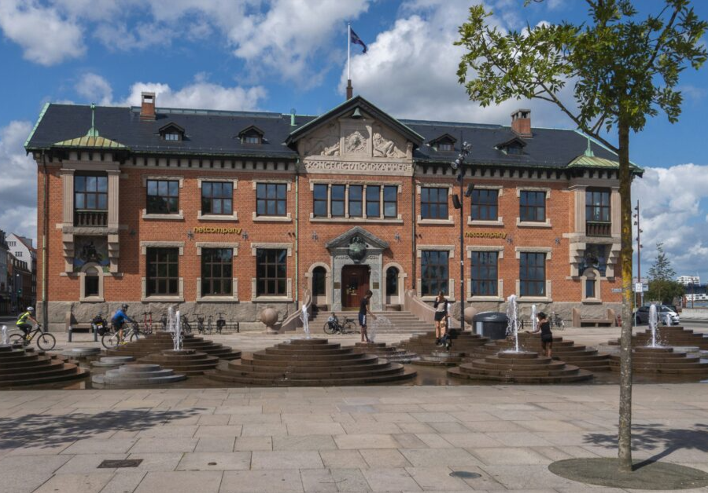
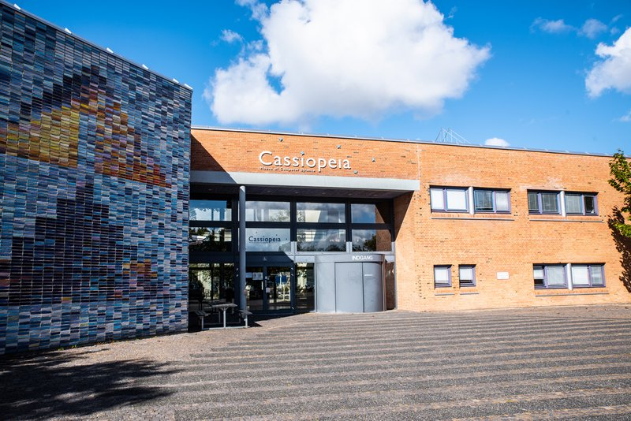

Discover my professional experience, including my role as an IT Consultant at Netcompany, where I work on data migration and system integration.
Career
I’m an IT professional with a strong background in system development, data migration, and user-centred design. My focus is on solving complex technical challenges while ensuring seamless integration and efficiency in large-scale projects. With expertise in frontend development, backend systems, and interactive design, I’m passionate about creating intuitive digital experiences. I continuously stay updated with emerging technologies, improving my skills and contributing to impactful projects that align with both business and user needs.

Netcompany - IT Consultant
Sep. 2025 - Present
As an IT Consultant working on the data migration efforts within Project Horizon at Netcompany, I am responsible for migrating 700,000 pension policies for Forca, a key player in Denmark's pension sector. These policies represent approximately 20% of Denmark's entire pension system. My role involves ensuring the accurate and efficient transfer of these policies, collaborating with cross-functional teams and stakeholders to address technical challenges and ensure smooth system integration.

Student Assistant at Aalborg University
Feb. 2025 - Jun. 2025
While studying Interaction Design at Aalborg University, I worked as a Student Assistant in the 3D Print Lab. My responsibilities included assisting students with troubleshooting 3D printing issues, performing machine maintenance, and providing support for various printing projects in the Department of Computer Science. This role helped me develop valuable technical skills, problem-solving abilities, and experience in a hands-on academic environment.